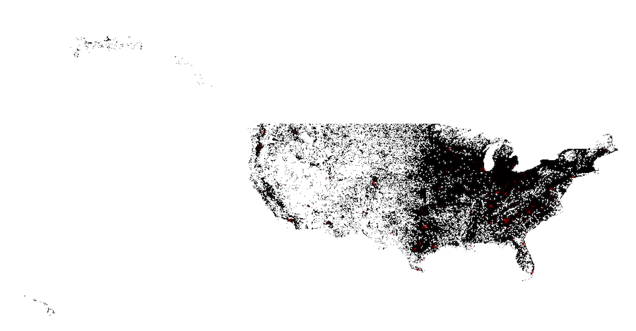

This page will give direct and straightforward information about the current statistics on the pandemic COVID19 across the world.
This first map is a representation of the current cases by country, state, and province. There is the option to add Deaths by Country, Active Cases by Country, and Total Cases by Country. The following map is a heatmap showing confirmed cases in the United States.
Map number two shows statistics from the Institure for Health Metrics and Evaluation (IHME) in order to give information about the projected peak time of the virus.
This map will take you to the beginning of the virus.
Population Density has a direct correlation between the virus spreading as well as the numebr of deaths.This map shows the population statistics for the united states.
People at the highest risk of death are highlighted in red.
3,580,202
Deaths248,452
Recovered1,159,219
Currently Infected2,172,531
Closed Cases1,407,671
Staying clean and healthy is the best way to combat this pandemic. Making sure to wash your hands as well as recognise the symptoms will help you as well as those around you. Use the button below to read more on recognize symptoms.
Fever
Cough
Difficulty Breathing
Chills
Repeated Shaking with Chills
Muscle Pain
Headache
Sore Throat
New Loss of Taste or Smell